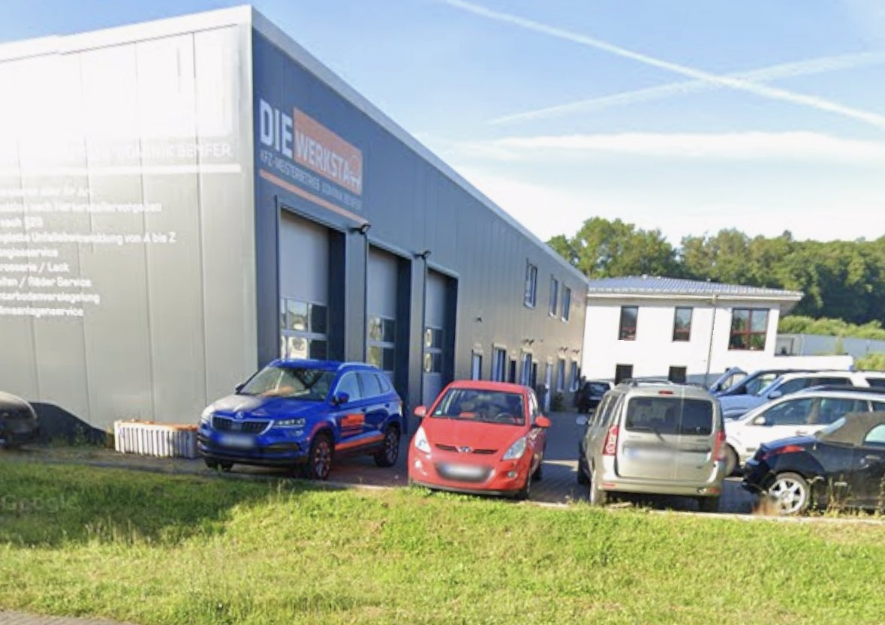

Start / Über uns
Über uns
Ein Meisterbetrieb, ein Chef, eine Halle an der Großen Brenne. Und die Überzeugung, dass ein Bauteil erst repariert und dann ersetzt wird.
Werkstatt mit Namen dran
„Die Werkstatt“ ist ein freier KFZ-Meisterbetrieb im Hagener Norden. Inhaber ist Dominik Benfer – sein Name steht an der Halle, und er steht auch an der Annahme.
Das hat einen praktischen Vorteil: Sie reden mit der Person, die anschließend entscheidet, was mit Ihrem Auto passiert. Kein Callcenter, keine Weiterleitung, kein Serviceberater, der die Werkstatt nur vom Hörensagen kennt.
Auf dem Hof stehen Kleinwagen neben Transportern und Unfallfahrzeugen. Genau so ist der Betrieb aufgestellt: Wartung und Verschleiß machen den Alltag, Karosserie, Lack und Unfallinstandsetzung kommen dazu.

Große Brenne 5 · 58099 HagenVier Sachen, die wir anders machen
Reparieren vor Tauschen
Wo ein Bauteil instand gesetzt werden kann, setzen wir es instand. Das dauert manchmal länger – kostet Sie aber weniger.
Diagnose zuerst
Wir suchen die Ursache, bevor Teile bestellt werden. Eine saubere Fehlersuche spart am Ende mehr Geld als jeder Rabatt.
Preis vorher
Was die Reparatur kostet, erfahren Sie vor der Freigabe. Kommt beim Schrauben etwas dazu, rufen wir an – statt es einfach zu machen.
Kleinigkeiten sofort
Eine defekte Birne vor dem Urlaub wechseln wir zwischendurch. Dafür braucht niemand einen Termin.
Sie versuchen, wenn möglich, erst Bauteile zu reparieren anstatt gleich neue zu bestellen. Das findet man nicht mehr oft.Tobias S · Google-Rezension
Kurz zusammengefasst
Betriebsart
Freier Meisterbetrieb
Markenübergreifend, Inhaber Dominik Benfer.
Standort
Große Brenne 5
58099 Hagen · Parken direkt vor der Halle.
Bewertungen
5,0 ★ bei Google
In allen hier gezeigten Rezensionen – die älteste ist acht Jahre alt.
Auto macht Ärger? Rufen Sie durch.
Am schnellsten geht es am Telefon – wir sagen Ihnen direkt, wann wir Zeit haben und was uns die Sache kosten dürfte.